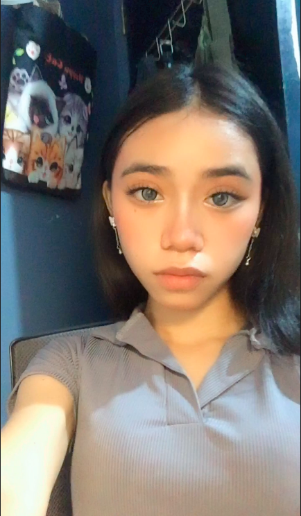

Music
Singing, harmonizing, playing piano, and getting lost in the music of Taylor Swift and Sabrina Carpenter.
my favorite kind of therapy ♡

dream • create • inspire ♡A LITTLE INTRODUCTION ✧
Create. Explore. Inspire.
I'm an Associate of Arts in Digital Design and Art student at the University of the Philippines Open University. I love music, creativity, and finding beauty in the little things that make life special.
When I'm not studying, you'll probably find me singing, harmonizing, playing the piano, taking photos, exploring visual design, or making coffee. I'm always curious about learning something new and turning little ideas into something meaningful.
A FEW OF MY FAVORITE THINGS
Little joys, big happiness.
Singing, harmonizing, playing piano, and getting lost in the music of Taylor Swift and Sabrina Carpenter.
my favorite kind of therapy ♡
Capturing little moments, beautiful details, and memories worth keeping.
moments made memorable ✧
Making coffee, trying little café-inspired ideas, and enjoying my barista side.
a cup of comfort ♡
Exploring fashion, beauty, and the little details that make personal style special.
a little touch of elegance ✧
Playing with colors, typography, layouts, and creative ways to express ideas.
made with imagination ♡
Finding inspiration in everyday experiences, meaningful memories, and simple joys.
the little things matter ♡
A COLLECTION OF IDEAS
Little ideas, creative beginnings.
WEB DESIGN
A personal webpage that brings together my interests, personality, and creative identity through design.
Created · 2026 ♡UI/UX DESIGN
A concept for a simple and welcoming café point-of-sale interface inspired by my love for coffee.
Concept · 2026 ✿MULTIMEDIA
A planned creative exploration combining music, visuals, and storytelling.
Planned · 2026 ♡A small collection of completed work, concepts, and ideas I'm excited to explore.
LET'S CONNECT ♡
Thank you for stopping by my little corner of the internet. I hope you found something lovely here.
Say hello ↗Dream a little. Create a lot. ♡